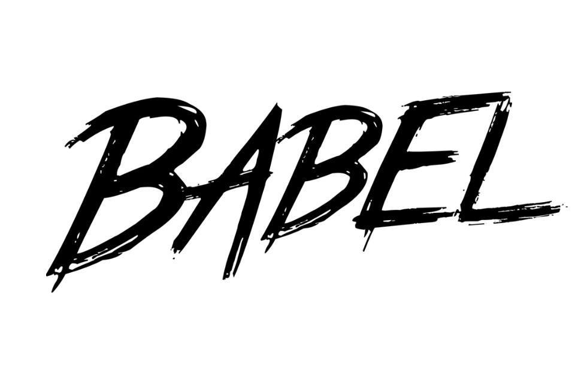
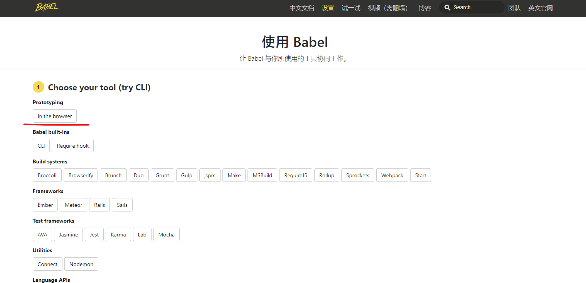
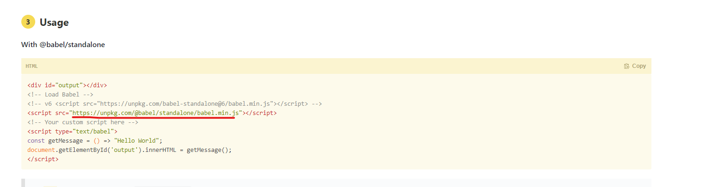
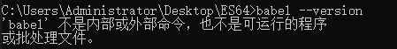
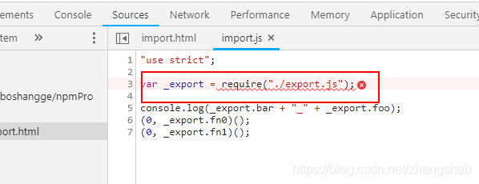
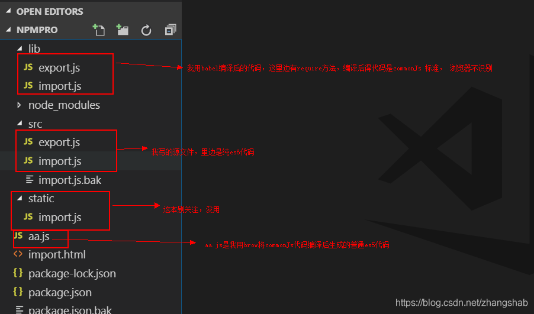
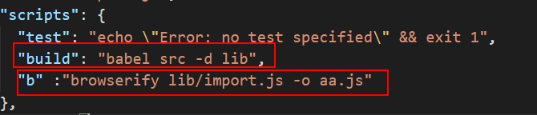

javascript在不断的发展，各种新的标准和提案层出不穷，但是由于浏览器的多样性，导致可能几年之内都无法广泛普及，babel可以让你提前使用这些语言特性，他是一种用途很多的javascript编译器，他把最新版的javascript编译成当下可以执行的版本，简言之，利用babel就可以让我们在当前的项目中随意的使用这些新最新的es6，或者更高的语法。说白了就是把各种javascript千奇百怪的语言统统专为浏览器可以认识的语言。
1<script src="./babel.min.js"></script>2<script type="text/babel">3 let a = 10;4 let b = 20;5 alert(a + b);6</script>

优势
劣势
一般使用babel都是编译完再引入，推荐使用第二种方法
安装node
生成package.json文件 加-y代表全部同意，不用一直回车
x
1npm init -y安装babel（3个包,，局部安装）加@代表安装最新版
x
1npm i @babel/core @babel/cli @babel/preset-env --save-devxxxxxxxxxx191{2 "name": "es62",3 "version": "1.0.0",4 "main": "babel.min.js",5 "scripts": {6 "test": "echo \"Error: no test specified\" && exit 1"7 "build": "babel src -d dist"8 },9 "author": "",10 "license": "ISC",11 "keywords": [],12 "description": "",13 "devDependencies": {14 "@babel/cli": "^7.13.14",15 "@babel/core": "^7.13.15",16 "@babel/preset-env": "^7.13.15"17 }18}19要看到 刚刚安装的三个库的版本号
配置.babelrc
新建 .babelrc文件（没后缀）
如果在文件内不允许新建不带后缀的文件，就用npm键 命令：copy con .babelrc ，再按ctrl+z 回车即可。
配置babelrc的用处是：根据什么进行编译。如果不配置，编译时代码会原封不动的返回。因为代码不知道根据谁去编译。
x
1{2 "presets": [3 "@babel/preset-env"4 ]5}配置package.json命令
在scripts里面可以配置一个build命令（名字不规定 build是打包的意思）
x
1"build": "babel src -d dist"第一个参数是运行谁，src是编译那个文件夹，-d 是往哪输出，dist是输出文件夹
不配置命令 用 npx babel src -d dist也能执行
使用npx可以在命令行直接执行本地已安装的依赖包命令，不用在scripts脚本写入命令，也不用麻烦的去找本地脚本（node_modules）。

npx详细学习地址：https://www.jianshu.com/p/14c813bba544
如果编译后有reqiure模块
x
1Error: Requires Babel "^7.0.0-0", but was loaded with "6.26.3". If you are sure you have a compatible version of @babel/core, it is likely that something in your build process is loading the wrong version. Inspect the stack trace of this error to look for the first entry that doesn't mention "@babel/core" or "babel-core" to see what is calling Babel. (While processing preset: "C:\\Users\\Administrator\\node_modules\\@babel\\preset-env\\lib\\index.js")babel --version如果报babel不是内部命令,就用npx babel --version查，返回6.26.0 (babel-core 6.26.3),我就卸载安装最新版-卸载安装最新版-卸载安装最新版 问题还是不能解决。最后还去下了babel-loader包以为要配置loader（脑子怎么想的），实际在.babelrc中修改配置就行了：x
1{2 "presets": [3 "env"4 ]5}xxxxxxxxxx51 {2 "presets": [3 "@babel/preset-env"4 ]5 }前面加：npx 执行 如：npx babel --version
npx详细学习地址：https://www.jianshu.com/p/14c813bba544

产生这个问题的原因：（根本原因是模块化es6方式转化成require和exports的commonJs形式）。浏览器不识别commonJS.
所以用进行打包处理（编译）。形成一个打包后的新文件。该文件在html中中引入即可。
Babel 的作用是帮助我们转换 ES6 代码为 ES5, 但是它没有模块管理的功能，浏览器端默认也无法识别 CommonJs 规范，这就需要我们额外使用模块打包工具，为我们的代码做一些包裹，让它能在浏览器端使用。 比如 Browserify, Webpack。
Babel 所做的只是帮你把‘ES6 模块化语法’转化为‘CommonJS 模块化语法’，其中的require exports 等是 CommonJS 在具体实现中所提供的变量。
任何实现 CommonJS 规范的环境（如 node 环境）可以直接运行这样的代码，而浏览器环境并没有实现对 CommonJS 规范的支持，所以我们需要使用打包工具（bundler）来进行打包，说的直观一点就是把所有的模块组装起来，形成一个常规的 js 文件。
常用的打包工具包括 browserify webpack rollup 等。
首先用npm安装browserify
x
1npm install browserify --save-dev使用下面的命令，就能将b.js转为浏览器可用的格式bb.js
x
1browserify src/index.js -o dist/index.js指定src文件夹下index.js 文件编译后生成到dist文件夹中，生成文件为index.js
如果引入的文件特别多，选择哪个文件打包呢？入口文件（js文件），将生成的文件直接在html中引入即可。


第一个babel命令，将文件夹src下的所有文件全部编译，生成新文件到lib文件夹中，lib文件夹中的所有代码都是commonJs形式。
第二个是browserify命令，将lib/import.js文件生成aa.js文件。
这块可能有疑问： lib文件夹中有两个.js文件。为什么只编译一个文件。因为import.js文件没有 exports了。仅仅有require()。
也就是说，该文件中只是引入其他文件，用其他文件的API。browserify打包时（编译）会去找import.js中有没有require('./xx')如果有，它就会去找xx.js文件，接着将如果xx.js中还有require（'./xx2'）那它会接着去。直到js文件中没有了require（）才算完成。这样browserify会将所有文件中的代码都打包一个文件中。那就是aa.js文件
参考文献：https://blog.csdn.net/zhangshab/article/details/83714288
配置package.json
xxxxxxxxxx51 "scripts": {2 "test": "echo \"Error: no test specified\" && exit 1",3 "build": "babel src -d dist",4 "b": "browserify dist/index.js -o out/main.js"5 }安装webpack和webpack-cli
xxxxxxxxxx11npm install webpack webpack-cli --save-dev这里没有加@是怕高版本webpack不稳定（实际应该没啥事），因为也就打包个东西
查看版本号，出现版本号则证明安装成功
xxxxxxxxxx11webpack -v更新package.json
xxxxxxxxxx11npm init -y正常情况下是自动更新的，要看到webpack版本号
x
1const path = require('path'); //调用node.js中的路径2module.exports = {3 entry: {4 index: './dist' //需要打包的文件5 },6 output: {7 filename: '[name].js', //输入的文件名是什么，生成的文件名也是什么8 path: path.resolve(__dirname, '../out/') //指定生成的文件目录9 },10 mode: "development" //开发模式，没有对js等文件压缩，默认生成的是压缩文件11}webpack ./dist ./out/main.js执行
x
1webpack --config config/webpack.config.js配置package.json
每次输入命令webpack --config config/webpack.config.js，太长，且非常不方便，此时我们可以在package.json文件中配置，如下所示：
x
1 "scripts": {2 "test": "echo \"Error: no test specified\" && exit 1",3 "build": "babel src -d dist",4 "b": "browserify dist/index.js -o out/main.js",5 "start": "webpack --config config/webpack.config.js"6 }配置完成后，我们输入的如下命令，可以直接打包。
xxxxxxxxxx11npm run start
参考文献：https://www.cnblogs.com/aizai846/p/11497508.html